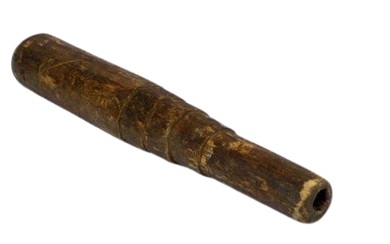

Papua Barat

Gambar diatas adalah Yi, cara memainkan Yi yaitu dengan cara ditiup melalui lubang yang kecil. Yi termasuk alat musik yang langka. Yi digunakan untuk memanggil warga atau sebagai pengiring tarian daerah. Yi terbuat dari bambu dan berwarna coklat.